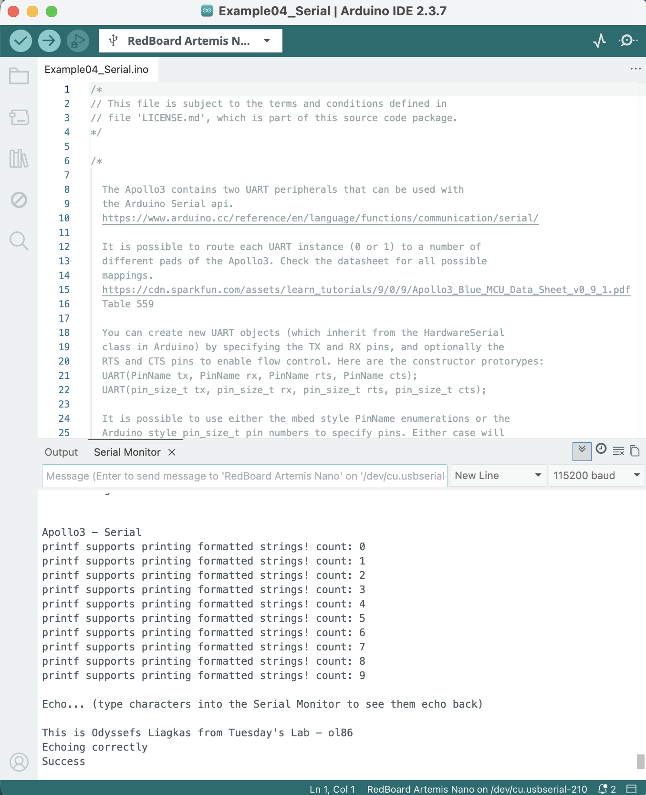
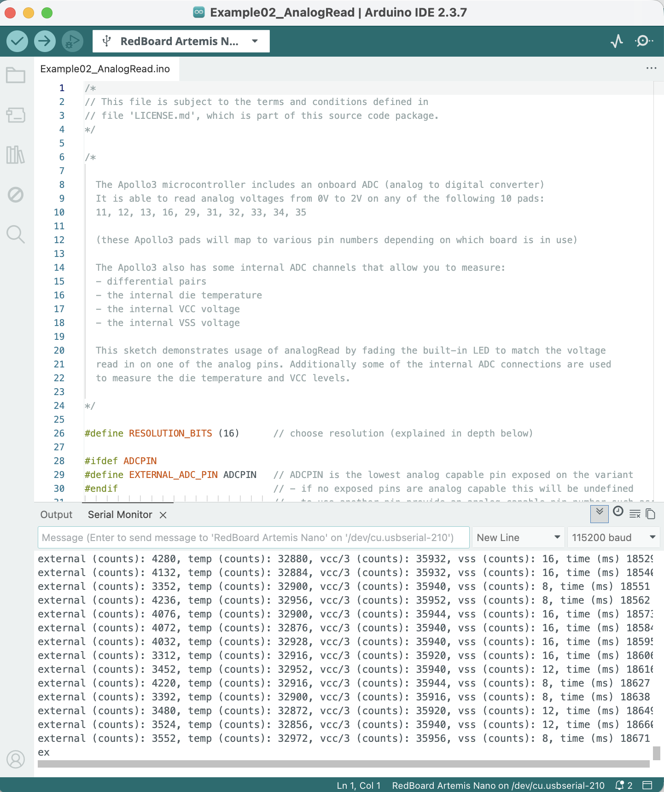
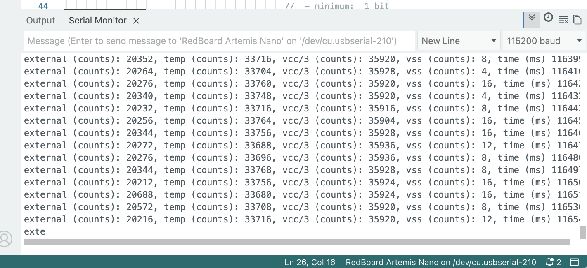
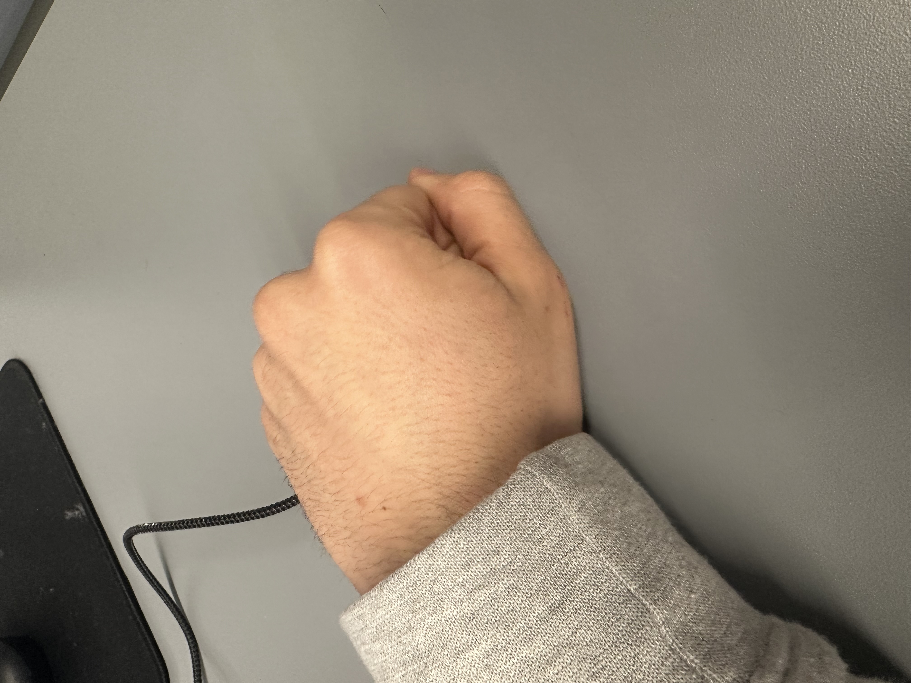
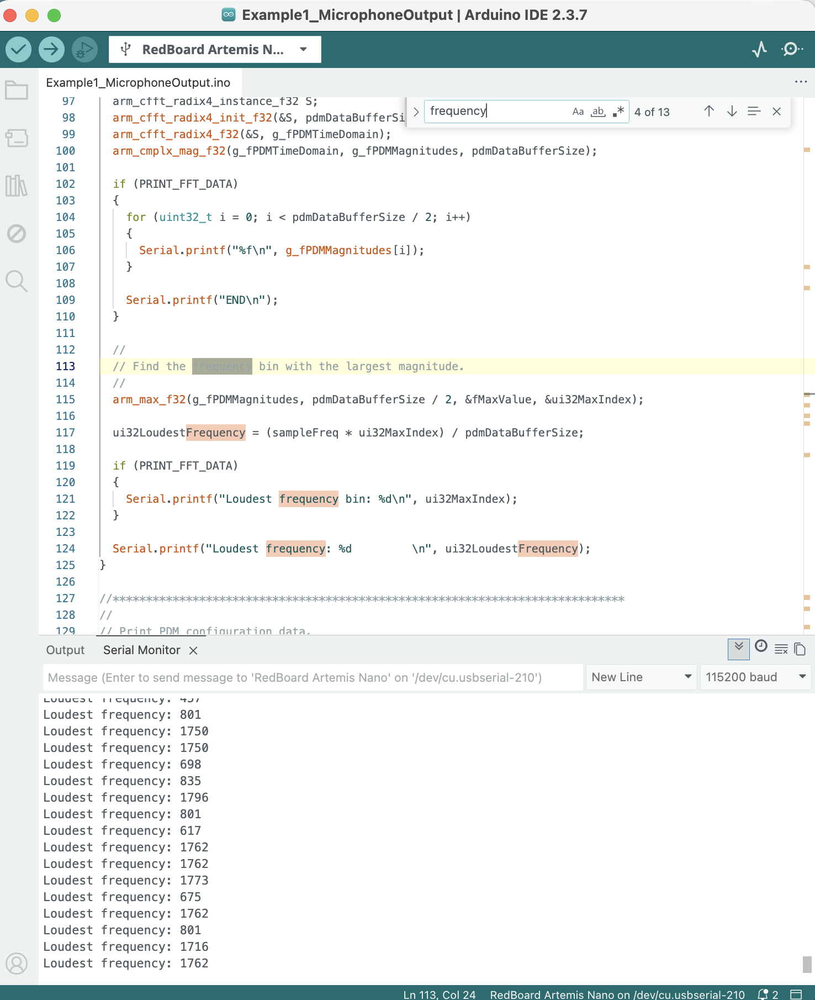
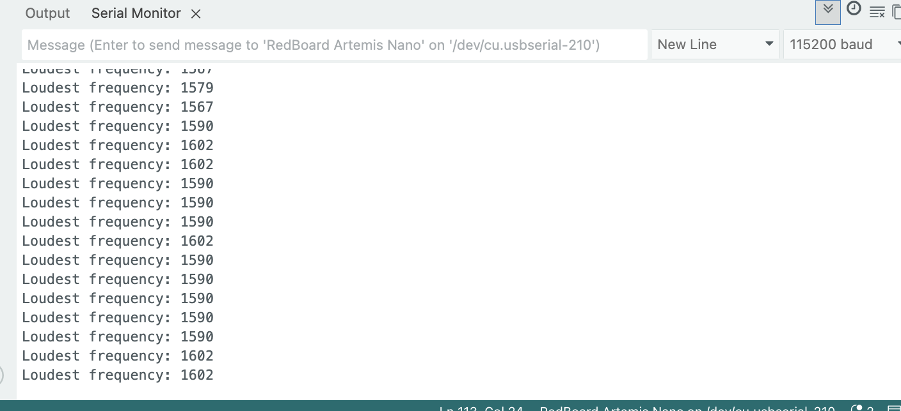
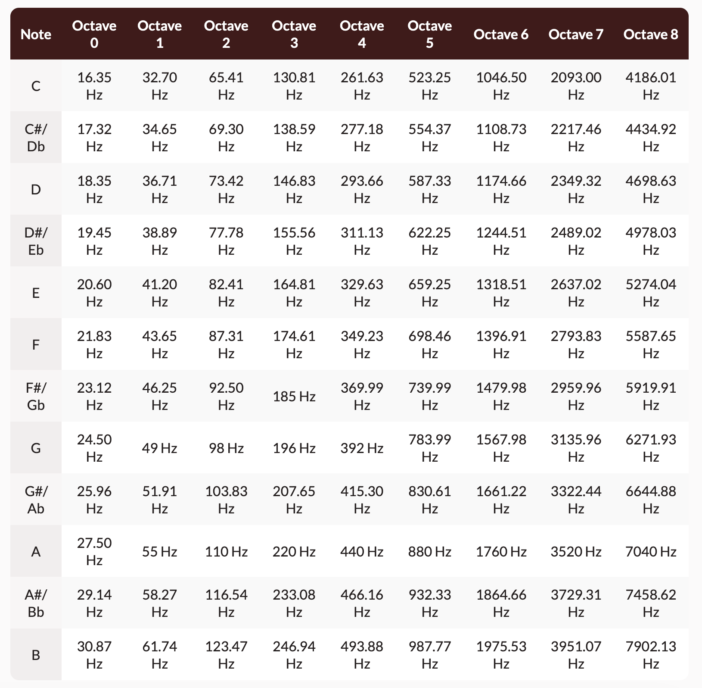

- 1A: Setup and become familiar with the Arduino IDE and the Artemis board
- 1B: Establish communication between computer and the Artemis board through the Bluetooth stack
- 1B: Eestablish a framework for sending data from the Artemis to the computer
Objectives
Lab 1A Tasks
- Blink
- Apollo3 serial
- Apollo3 analogRead
- PDM MicrophoneOutput
- Simplified Electronic Tuner (Graduate lelel)
Blink
The following is a video that showcases the Artemis board flashing its blue LED light:
Video 1: artemis blinking
Apollo3 serial
The following screenshot shows Artemis Echoing back what was sent to it:

Screenshot 1: artemis echoing
Apollo3 analogRead
Firslty we have a screenshot of the Artemis' output from the temperature sensor and a photo of when it was sitting on the bench:

Screenshot 2: artemis temp sensor output while being on bench

Photo 1: artemis at the time of temp sensor output while being on bench
Secondly we have a screenshot of the Artemis' output from the temperature sensor and a photo of when it was being help in hand:

Screenshot 3: artemis temp sensor output when being help

Photo 2: artemis at the time of temp sensor output when being help
We can see that the leftmost measurement went from around 3-4 thousand, while on the bench, all the way up to 20 thousand when being held.
PDM MicrophoneOutput
The following video showcases the difference in output when whistling next to the Artemis board:
Video 2: artemis reacting to sound

Screenshot 4: artemis microphone out ambient sounds of lab

Screenshot 5: artemis microphone out when whistling to it
We can see that the artemis is able of capturing differences in sound frequency.
Simplified Electronic Tuner
To select the three frequencies that the tuner would identify I went to:
https://mixbutton.com/music-tools/frequency-and-pitch/music-note-to-frequency-chart
I selected the ones for the notes A, A# and B for the octave 7 so that the tuner would be able to work properly inside the noisy lab.
The following image is from mixbutton and it shows the frequency-note table:

Table 1: frequency-note table from mixbutton.com
The following video shows artemis' simplified tuner respond to 3500Hz which corresponds to the note A:
Video 3: artemis reacting to 3500Hz
The following video shows artemis' simplified tuner respond to 3500Hz, 3750Hz and 4000Hz which correspond to the octave 7 notes A, A# and B respectively:
Video 4: artemis reacting to octave 7 A, A# and B
Lab 1B Tasks
- Echo
- SEND_THREE_FLOATS
- GET_TIME_MILLIS
- Notification Handler
- Current time getter and sender
- SEND_TIME_DATA
- GET_TEMP_READINGS
- Disscusion of differences
BLE and Codebase
After having created the virtual environment
Lab 1B configurations
After having created the virtual environment FastRobots_ble and sourced it with:
python3 -m pip install --user virtualenv
python3 -m venv FastRobots_ble
source FastRobots_ble/bin/activate
pip install numpy pyyaml colorama nest_asyncio bleak jupyterlab
jupyter lab
Discussion
Lab 1 successfully established the hardware and software foundation for the Fast Robots course. The Bluetooth communication protocol and basic motor control are now functional and ready for extension in subsequent labs.
Collaboration
I used Kimi to build the basic template for the website and I referred to Lucca Correia's Website for how to structure this lab report.